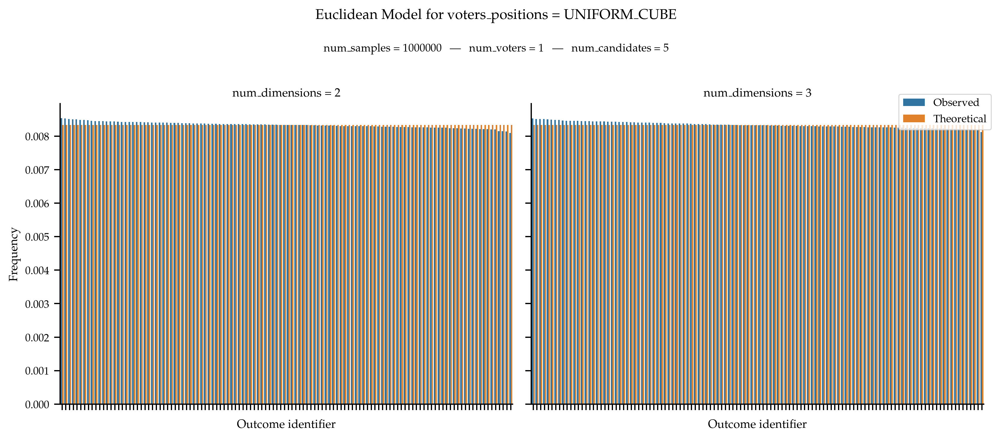
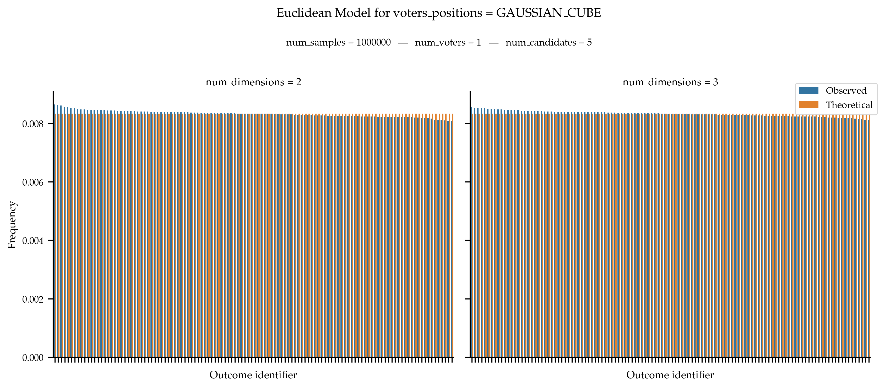
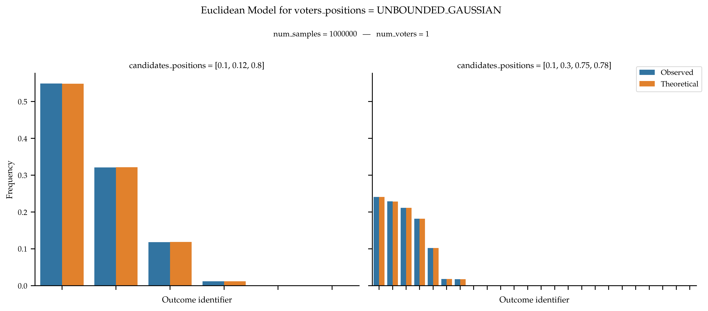
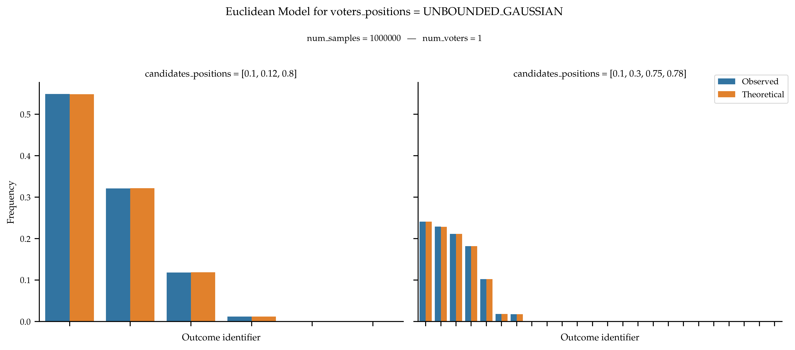

Euclidean Models#
In Euclidean models, the voters and the candidates are assigned random positions in a given space. The preferences of a voter are then defined based on the distance between the voter and the candidates.
- euclidean(num_voters: int, num_candidates: int, num_dimensions: int, voters_positions: EuclideanSpace | Callable | Iterable[Iterable[float]], candidates_positions: EuclideanSpace | Callable | Iterable[Iterable[float]], voters_positions_args: dict = None, candidates_positions_args: dict = None, seed: int = None) ndarray[source]#
Generates approval votes according to the Euclidean model.
In this model voters and candidates are assigned random positions in a Euclidean space (positions can also be provided as argument to the function). A voter then ranks the candidates in increasing order of distance: their most preferred candidate is the closest one to them, etc.
A collection of num_voters vote is generated independently and identically following the process described above (as long as the point distribution is independent and identical). Generates ordinal votes according to the Euclidean model.
- Parameters:
num_voters (int) – Number of Voters.
num_candidates (int) – Number of Candidates.
num_dimensions (int) – The number of dimensions to use. Using this argument is mandatory when passing a space as argument. If you pass samplers as arguments and use the num_dimensions, then, the value of num_dimensions is passed as a kwarg to the samplers.
voters_positions (
EuclideanSpace| Callable | Iterable[Iterable[float]]) – The positions of the voters, or a way to determine them. If an Iterable is passed, then it is assumed to be the positions themselves. Otherwise, it is assumed that a sampler for the positions is passed. It can be either the nickname of a sampler—when passing aEuclideanSpace; or a sampler. A sampler is a function that takes as keywords arguments: ‘num_points’, ‘num_dimensions’, and ‘seed’. Additional arguments can be provided with by using thevoters_positions_argsargument.candidates_positions (
EuclideanSpace| Callable | Iterable[Iterable[float]]) – The positions of the candidates, or a way to determine them. If an Iterable is passed, then it is assumed to be the positions themselves. Otherwise, it is assumed that a sampler for the positions is passed. It can be either the nickname of a sampler—when passing aEuclideanSpace; or a sampler. A sampler is a function that takes as keywords arguments: ‘num_points’, ‘num_dimensions’, and ‘seed’. Additional arguments can be provided with by using thecandidates_positions_argsargument.voters_positions_args (dict, default:
dict()) – Additional keyword arguments passed to thevoters_positionssampler when the latter is a Callable.candidates_positions_args (dict, default:
dict()) – Additional keyword arguments passed to thecandidates_positionssampler when the latter is a Callable.seed (int, default:
None) – Seed for numpy random number generator. Also passed to the point samplers if a value is provided.
- Returns:
Ordinal votes.
- Return type:
np.ndarray
Examples
Using
EuclideanSpaceThe easiest is to use one of the Euclidean spaces defined in
EuclideanSpace.from prefsampling.ordinal import euclidean from prefsampling.core.euclidean import EuclideanSpace # Here for 2 voters and 3 candidates with 5D uniform ball for both voters and candidates euclidean(2, 3, 5, EuclideanSpace.UNIFORM_BALL, EuclideanSpace.UNIFORM_BALL) # You can use different spaces for the voters and the candidates euclidean( 2, 3, 5, EuclideanSpace.UNIFORM_SPHERE, EuclideanSpace.GAUSSIAN_CUBE, )
Using
prefsampling.pointIf you need more flexibility, you can also pass the point samplers directly.
from prefsampling.ordinal import euclidean from prefsampling.point import ball_uniform # Here for 2 voters and 3 candidates with 5D uniform ball for both voters and candidates euclidean(2, 3, 5, ball_uniform, ball_uniform) # You can specify additional arguments to the point sampler euclidean( 2, 3, 5, ball_uniform, ball_uniform, voters_positions_args = {'widths': (1, 3, 2, 4, 2)} ) # You can also specify different point samplers for voters and candidates from prefsampling.point import cube euclidean( 2, 3, 5, ball_uniform, ball_uniform, voters_positions_args = {'widths': (4, 7, 3, 3, 1), 'only_envelope': True}, candidates_positions_args = {'center_point': (0.5, 1, 0, 0, 0)} )
Using already known-positions
If you already have positions for the voters or the candidates, you can also pass them to the sampler.
from prefsampling.ordinal import euclidean from prefsampling.point import gaussian from prefsampling.core.euclidean import EuclideanSpace # First sampler positions of the 3 candidates in 2 dimensions candidates_positions = gaussian(3, 2, sigmas=(0.4, 0.8), widths=(5, 1)) # Then sample preferences for 2 voters based on the candidates positions euclidean( 2, 3, 2, EuclideanSpace.GAUSSIAN_BALL, candidates_positions )
Validation
There is no known expression for the probability distribution governing Euclidean models.
With a Single Voter
Still, if there is a single voter, we know that we should obtain a uniform distribution over all rankings.
 With Fixed Candidates Positions on the Line
If the positions of the candidates are fixed, the probability distribution can be computed by considering the size of the hyperplanes separating two candidates. We apply this method in one dimension to validate the sampler.
 

In General
In the general case, we obtain the following distribution of frequencies.
References
The spatial theory of voting: An introduction, Enelow, James M., and Melvin J. Hinich, Cambridge University Press, 1984.
{kind=link}
{kind=link}
{kind=link}
{kind=link}
{kind=link}
{kind=link}
{kind=link}
{kind=link}
{kind=link}
{kind=link}
{kind=link}
{kind=link}
{kind=link}
{kind=link}
- class EuclideanSpace(value, names=None, *, module=None, qualname=None, type=None, start=1, boundary=None)[source]#
Constants for some pre-defined Euclidean distributions.
- GAUSSIAN_BALL = 'gaussian_ball'#
Constants representing a Gaussian ball with center point at the origin and width of 1 for all dimensions. The inner Gaussian sampler has mean 0 and standard deviation 0.33.
- GAUSSIAN_CUBE = 'gaussian_cube'#
Constants representing a Gaussian ball with center point at the origin and width of 1 for all dimensions.
- UNBOUNDED_GAUSSIAN = 'unbounded_gaussian'#
Constants representing an unbounded Gaussian space.The inner Gaussian sampler has mean 0 and standard deviation 1.
- UNIFORM_BALL = 'uniform_ball'#
Constants representing a uniform ball with center point at the origin and width of 1 for all dimensions.
- UNIFORM_CUBE = 'uniform_cube'#
Constants representing a uniform cube with center point at the origin and width of 1 for all dimensions.
- UNIFORM_SPHERE = 'uniform_sphere'#
Constants representing a uniform sphere with center point at the origin and width of 1 for all dimensions. This is the envelope of the uniform ball.